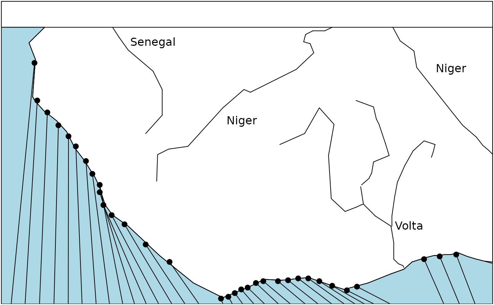
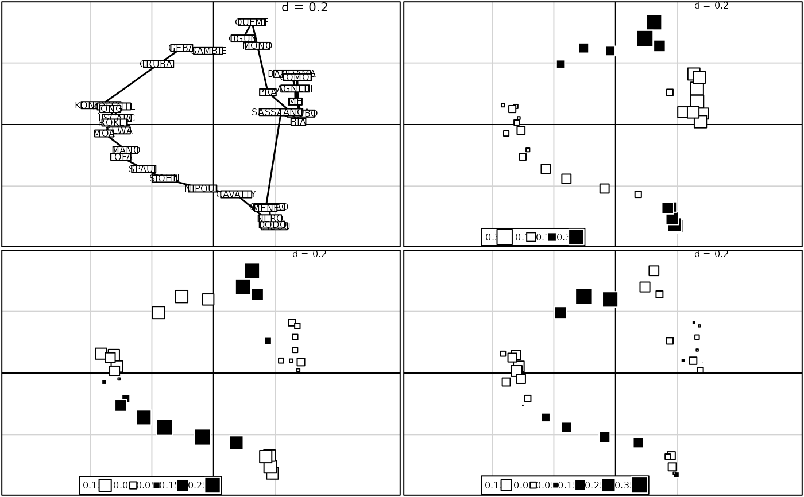

Freshwater fish zoogeography in west Africa
westafrica.RdThis data set contains informations about faunal similarities between river basins in West africa.
Usage
data(westafrica)Format
westafrica is a list containing the following objects :
- tab
: a data frame with absence/presence of 268 species (rows) at 33 embouchures (columns)
- spe.names
: a vector of string of characters with the name of species
- spe.binames
: a data frame with the genus and species (columns) of the 256 species (rows)
- riv.names
: a vector of string of characters with the name of rivers
- atlantic
: a data frame with the coordinates of a polygon that represents the limits of atlantic (see example)
- riv.xy
: a data frame with the coordinates of embouchures
- lines
: a data frame with the coordinates of lines to complete the representation (see example)
- cadre
: a data frame with the coordinates of points used to make the representation (see example)
Source
Data provided by B. Hugueny hugueny@mnhn.fr.
Paugy, D., Traoré, K. and Diouf, P.F. (1994) Faune ichtyologique des eaux douces d'Afrique de l'Ouest. In Diversité biologique des poissons des eaux douces et saumâtres d'Afrique. Synthèses géographiques, Teugels, G.G., Guégan, J.F. and Albaret, J.J. (Editors). Annales du Musée Royal de l'Afrique Centrale, Zoologie, 275, Tervuren, Belgique, 35--66.
Hugueny, B. (1989) Biogéographie et structure des peuplements de Poissons d'eau douce de l'Afrique de l'ouest : approches quantitatives. Thèse de doctorat, Université Paris 7.
References
Hugueny, B., and Lévêque, C. (1994) Freshwater fish zoogeography in west Africa: faunal similarities between river basins. Environmental Biology of Fishes, 39, 365--380.
Examples
data(westafrica)
if(!adegraphicsLoaded()) {
s.label(westafrica$cadre, xlim = c(30, 500), ylim = c(50, 290),
cpoi = 0, clab = 0, grid = FALSE, addax = 0)
old.par <- par(no.readonly = TRUE)
par(mar = c(0.1, 0.1, 0.1, 0.1))
rect(30, 0, 500, 290)
polygon(westafrica$atlantic, col = "lightblue")
points(westafrica$riv.xy, pch = 20, cex = 1.5)
apply(westafrica$lines, 1, function(x) segments(x[1], x[2], x[3], x[4], lwd = 1))
apply(westafrica$riv.xy,1, function(x) segments(x[1], x[2], x[3], x[4], lwd = 1))
text(c(175, 260, 460, 420), c(275, 200, 250, 100), c("Senegal", "Niger", "Niger", "Volta"))
par(srt = 270)
text(westafrica$riv.xy$x2, westafrica$riv.xy$y2-10, westafrica$riv.names, adj = 0, cex = 0.75)
par(old.par)
rm(old.par)
}

# multivariate analysis
afri.w <- data.frame(t(westafrica$tab))
afri.dist <- dist.binary(afri.w,1)
afri.pco <- dudi.pco(afri.dist, scannf = FALSE, nf = 3)
if(adegraphicsLoaded()) {
G1 <- s1d.barchart(afri.pco$li[, 1:3], p1d.horizontal = FALSE, plabels.cex = 0)
} else {
par(mfrow = c(3, 1))
barplot(afri.pco$li[, 1])
barplot(afri.pco$li[, 2])
barplot(afri.pco$li[, 3])
}
if(requireNamespace("spdep", quietly = TRUE)) {
# multivariate spatial analysis
afri.neig <- neig(n.line = 33)
afri.nb <- neig2nb(afri.neig)
afri.listw <- spdep::nb2listw(afri.nb)
afri.ms <- multispati(afri.pco, afri.listw, scannf = FALSE, nfposi = 6, nfnega = 0)
if(adegraphicsLoaded()) {
G2 <- s1d.barchart(afri.ms$li[, 1:3], p1d.horizontal = FALSE, plabels.cex = 0)
g31 <- s.label(afri.ms$li, plabels.cex = 0.75, ppoints.cex = 0, nb = afri.nb, plot = FALSE)
g32 <- s.value(afri.ms$li, afri.ms$li[, 3], plot = FALSE)
g33 <- s.value(afri.ms$li, afri.ms$li[, 4], plot = FALSE)
g34 <- s.value(afri.ms$li, afri.ms$li[, 5], plot = FALSE)
G3 <- ADEgS(list(g31, g32, g33, g34), layout = c(2, 2))
} else {
par(mfrow = c(3, 1))
barplot(afri.ms$li[, 1])
barplot(afri.ms$li[, 2])
barplot(afri.ms$li[, 3])
par(mfrow = c(2, 2))
s.label(afri.ms$li, clab = 0.75, cpoi = 0, neig = afri.neig, cneig = 1.5)
s.value(afri.ms$li, afri.ms$li[, 3])
s.value(afri.ms$li, afri.ms$li[, 4])
s.value(afri.ms$li, afri.ms$li[, 5])
}
summary(afri.ms)
}
#> Warning: This function is now deprecated. Please use the 'multispati' function in the 'adespatial' package.
#> Warning: This method is now deprecated. Please use the 'summary.multispati' method in the 'adespatial' package.
#>
#> Multivariate Spatial Analysis
#> Call: multispati(dudi = afri.pco, listw = afri.listw, scannf = FALSE,
#> nfposi = 6, nfnega = 0)
#>
#> Scores from the initial duality diagramm:
#> var cum ratio moran
#> RS1 0.05660710 0.05660710 0.1635437 0.9598444
#> RS2 0.03641095 0.09301805 0.2687386 0.7372155
#> RS3 0.02776793 0.12078598 0.3489629 0.6735561
#> Warning: This function is now deprecated. Please use the 'multispati' function in the 'adespatial' package.

#>
#> Multispati eigenvalues decomposition:
#> eig var moran
#> CS1 0.05455534 0.05641792 0.9669861
#> CS2 0.03084339 0.03406832 0.9053395
#> CS3 0.02052642 0.02544985 0.8065439
#> CS4 0.01671907 0.01891409 0.8839480
#> CS5 0.01342381 0.01539323 0.8720593
#> CS6 0.01043363 0.01371212 0.7609053
par(mfrow = c(1, 1))
plot(hclust(afri.dist, "ward.D"), h = -0.2)